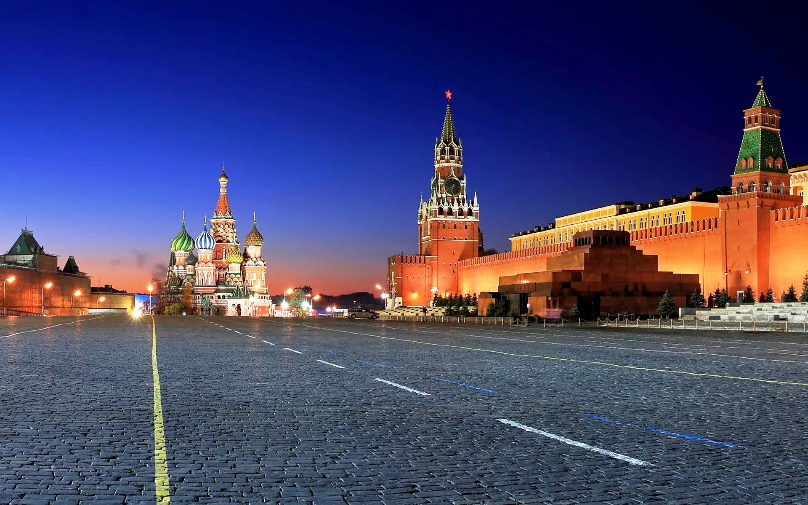
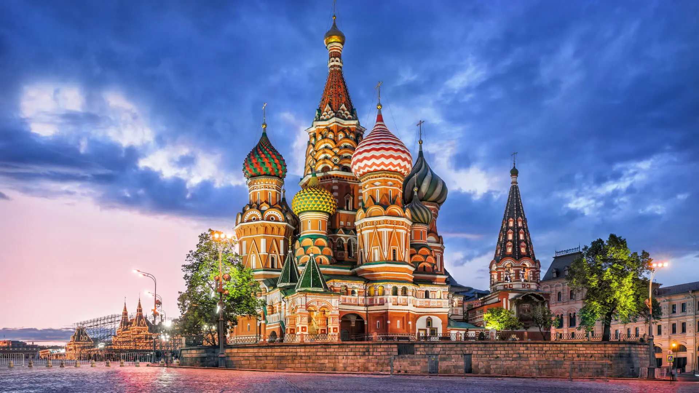
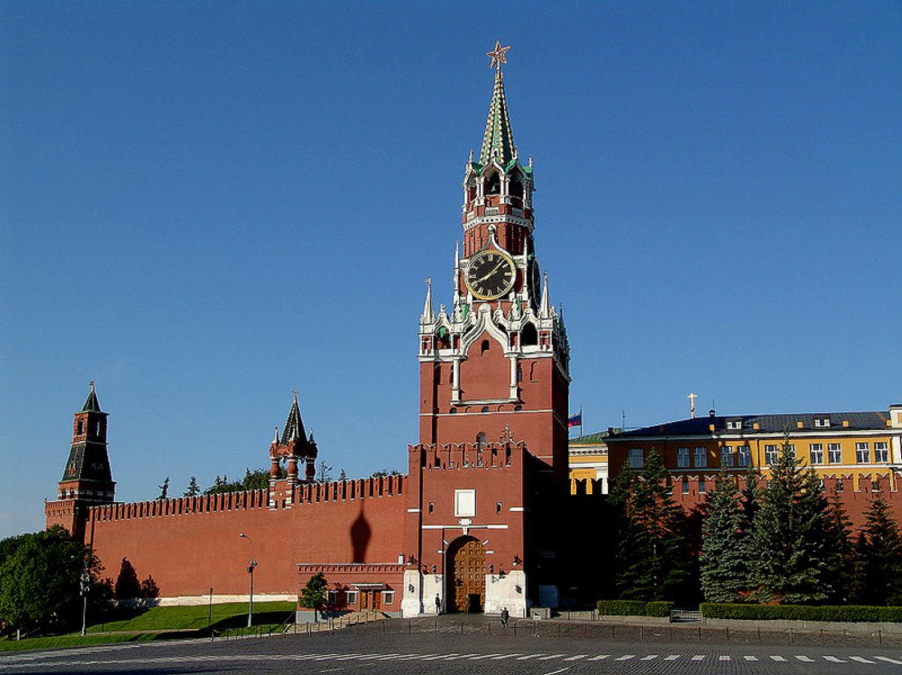

О нашем городе Москва
s
Город Москва - столица России, город федерального значения, административный центр Центрального федерального округа и центр Московской области. Мегаполис, крупнейший по численности населения город России и её субъект — 13 149 803 человека (2024), что делает Москву 22-й среди городов мира по численности населения. Центр Московской городской агломерации. Самый крупный город Европы по площади и населению. Это огромный мегаполис, который является историческим, политическим и духовным сердцем Российской Федерации
Археологические данные свидетельствуют о существовании городского поселения в районе будущего Кремля с XI века. История города насчитывает, по меньшей мере, 877 лет: первое письменное упоминание о Москве относится к 1147 году. Москва — историческая столица Великого княжества Московского, Русского царства, Российской империи (в 1728—1732 годах), Советской России и СССР. Город-герой. В Москве находятся федеральные органы государственной власти Российской Федерации (за исключением Конституционного суда), посольства иностранных государств, штаб-квартиры большинства крупнейших российских коммерческих организаций и общественных объединений.
Расположена на западе России, на реке Москве в центре Восточно-Европейской равнины, в междуречье Оки и Волги. Как субъект федерации Москва граничит с Московской и Калужской областями. Москва включает 6 городских населённых пунктов, в том числе 4 города и 2 посёлка городского типа, а также большое количество сельских населённых пунктов. Ряд подмосковных городов, посёлков городского типа и сельских населённых пунктов были включены в состав Москвы и утратили свой статус.
Москва — популярный туристический центр. Московский Кремль, Красная площадь, Новодевичий монастырь и Церковь Вознесения в Коломенском входят в список объектов всемирного наследия ЮНЕСКО. Она является важнейшим транспортным узлом: город обслуживают 6 аэропортов, 10 железнодорожных вокзалов, 3 речных порта (имеется речное сообщение с морями бассейнов Атлантического и Северного Ледовитого океанов). С 1935 года в Москве работает метрополитен. Москва — спортивный центр страны. В 1980 году в Москве прошли XXII летние Олимпийские игры, а в 2018 году город стал одним из хозяев чемпионата мира по футболу.
Москва занимает 31 место в рейтинге научно-технологических кластеров мира (Глобальный инновационный индекс, 2022 год).
Достопримечательности
-
Красная площадь -
главная площадь Москвы и России, расположена между Московским
Кремлём (к западу) и Китай-городом (на восток). Выходит к берегу
Москвы-реки через пологий Васильевский спуск. Площадь тянется
вдоль северо-восточной стены Кремля, от Кремлёвского проезда и
проезда Воскресенские Ворота до Васильевского спуска, выходящего к
Кремлёвской набережной. На восток от Красной площади отходят
Никольская улица, Ильинка и Варварка. Вдоль западной стороны
площади расположен Московский Кремль, вдоль восточной — Верхние
торговые ряды и Средние торговые ряды. Входит в единый ансамбль с
Московским Кремлём, однако исторически является частью
Китай-города.
На Красной площади расположены Лобное место, памятник Минину и Пожарскому, Мавзолей Владимира Ленина, некрополь у Кремлёвской стены. В северной части площади находятся Исторический музей и Казанский собор, в южной — Покровский собор. Архитектурный ансамбль находится под охраной ЮНЕСКО как памятник Всемирного наследия.
Площадь издревле служила местом торга, где много веков подряд возводились временные и постоянные торговые ряды. В советское время на площади проходили военные парады и демонстрации, после распада СССР она стала использоваться для общественных мероприятий и концертов.
Общая длина — 330 метров, ширина — 75 метров, площадь — 24 750 м². Вымощена брусчаткой из крымского габбро-диабаза.
-
Храм Василия Блаженного -
официально собо́р Покрова́ Пресвято́й Богоро́дицы, что на Рву (также
Покро́вский собо́р, собо́р Покрова́ на Рву) — православный храм на
Красной площади в Москве, памятник русской архитектуры. Построен в
1555—1561 годах.
Объединяет одиннадцать церквей (приделов), часть из которых освящена в честь святых, дни памяти которых пришлись на решающие бои за Казань. Центральная церковь сооружена в честь Покрова Пресвятой Богородицы, вокруг которой группируются отдельные церкви в честь: Святой Троицы, Входа Господня в Иерусалим, Николы Великорецкого, Трёх Патриархов: Александра, Иоанна и Павла Нового, Григория Армянского, Киприана и Иустины, Александра Свирского и Варлаама Хутынского, размещённые на одном основании-подклете, а также придел в честь Василия Блаженного, по имени которого храм получил второе, более известное название, и церковь Иоанна Блаженного, вновь открытая после длительного запустения в ноябре 2018 года.
В названии упомянут ров, проходивший вдоль Кремлёвской стены и служивший оборонительным укреплением (Алевизов ров), его глубина была около 13 метров, а ширина — около 36 метров.
Входит в российский список объектов Всемирного наследия ЮНЕСКО и является филиалом Государственного исторического музея.
-
Кремль -
«крепость»; однокоренные — кро́мка, кро́ме, укро́мный, кре́мень,
крома́, закрома́, закро́м, крёмный) — укреплённое ядро исторического
русского города, центральная и наиболее древняя его часть.
В Толковом словаре живого великорусского языка Владимира Даля написано что Кремль (м.) крем, кремни́к стар. и кром (от кроми́ть, кромленое место), детинец, внутреняя крепостца, крепость внутри города; стена с бойницами, воротами, башнями, ограждающая важнейшую часть города, дворец, казну и прочее. Также первоначальное название древне-русского кремля — Каменный город. Слово «кремль» с XIV века получило распространение в Северо-Восточной Руси, постепенно заменив первоначальное название «детинец». В структуре древнерусских городов к обнесённому крепостной стеной кремлю-детинцу в большинстве случаев примыкали 1—2 более крупных по площади окольных города, которые также были укреплены. Неукреплённые части города назывались «посадами».
В кремле, как правило, находился княжеский дворец, главные каменные храмы, усадьбы феодальной знати и ремесленные мастерские, обслуживавшие княжеский двор. Для повышения обороноспособности кремли пытались строить с учётом естественных преимуществ рельефа местности — на мысах у слияния рек, на возвышенностях.
«Кремлями» иногда неправильно называют некоторые крепостные сооружения (Орешек, Ям, Ивангородская крепость), которые в Древней Руси изначально создавались не в качестве городских укреплений, а как пограничные военные форпосты; «кремлями» именовались отдельные монастыри, например, Соловецкий. Несколько спорно право именоваться «кремлём» и резиденции Ивана Грозного в Александровской слободе, нередко называемой «Александровским кремлём», и укреплённых резиденций архиереев (архиерейских дворов) в Тобольске и Ростове.
Полностью аналогичны русским кремлям (хотя к ним такое название не применяется) окружённые крепостной стеной древне/средневековые города-крепости Ближнего Востока (например, старый город Иерусалима), Европы (например, старый город Авилы), Китая (например, старые города Сианя, Датуна).
Контакты
| Красная площадь | Храм василия блаженного режим | Кремль |
|---|---|---|
| Вымощенное брусчаткой пространство в самом центе Москвы | Главная столпообразная церковь в честь Покрова Божией Матери | Исторический, культурный и религиозно значимый комплекс в центре Москвы |
| ул Тверская, д 10. | Красная площадь, 7 | Станция метро 'Охотный ряд' |
| Рабочие часы: круглосуточно | Рабочие часы: 11:00-18:00 | Рабочие часы: 10:00-17:00 часов. Оружейная палата работает по сеансам 10:00, 12:00, 14:30, 16:30. |
|  |  |  |
1 Как добраться до исторических мест в городе?
-
- Откройте на своем смартфоне приложение "Яндекс карты"
- Введите интересующие Вас историческое место
- Когда будет задан маршрут, двигайтесь по заданному маршруту
- Есть маршрут не был задан, обратитесь в тех. поддержку приложения
- Используйте бумажную карту свежего выпуска :D
-
Спроси прохожего
-
Если Вы или прохожий не знаете русского языка, то:
- Используйте переводчик
- Спроси кто знает ;)
2 Где находятся лучшие рестораны в центре города?
3 Какие культурные мероприятия проходят в этом месяце?
4 Какой лучший способ познакомиться с местными достопримечательностями?
- Пешая прогулка по классическому маршруту. Он проходит через центр столицы и включает важнейшие памятники, музеи, парки и архитектурные объекты.
- Круиз по Москве-реке. Так можно посмотреть главные достопримечательности центра с воды: Кремль и собор Василия Блаженного, храм Христа Спасителя, Зарядье и Парящий мост, высотку на Котельнической набережной, берег парка Горького и Нескучный сад, Лужники и другие места.
- Пешеходная экскурсия с гидом. Она позволит сэкономить время и лучше ориентироваться в незнакомых местах.
- Посещение смотровых площадок. Например, на Воробьёвых горах или на площадке РАН. С них открываются панорамные виды на многие столичные достопримечательности: Кремль, Останкинскую телебашню, храм Христа Спасителя, небоскрёбы делового центра «Москва-Сити».